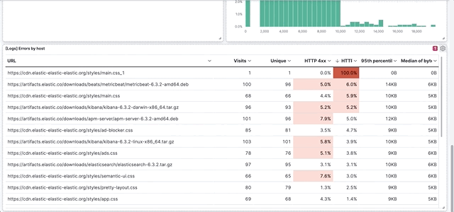
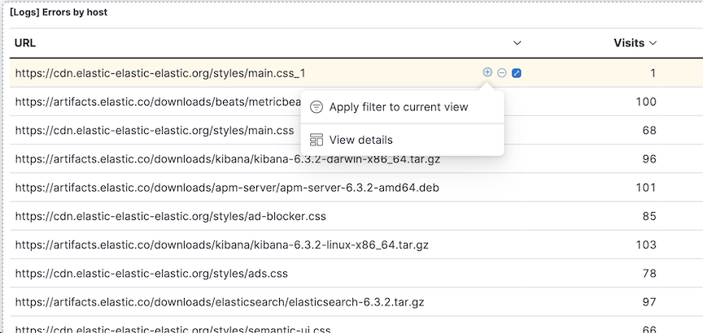
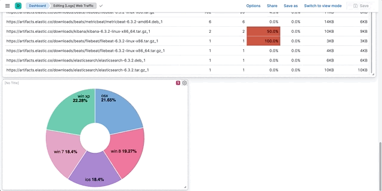
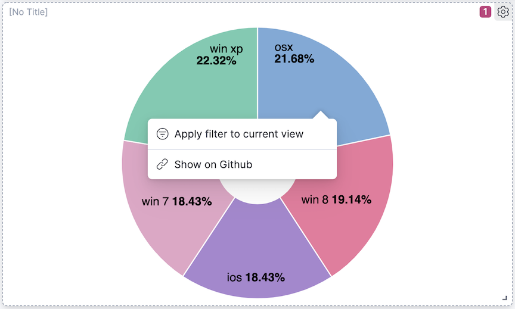
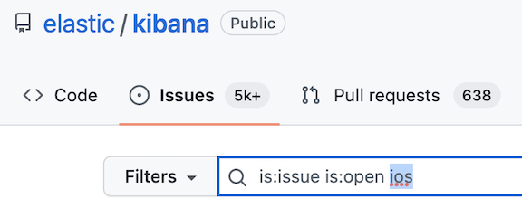
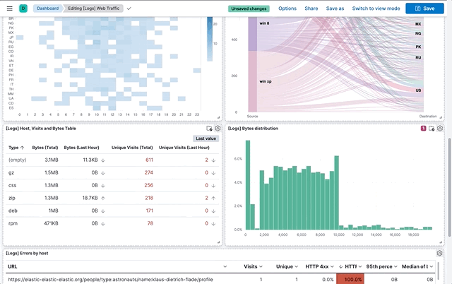
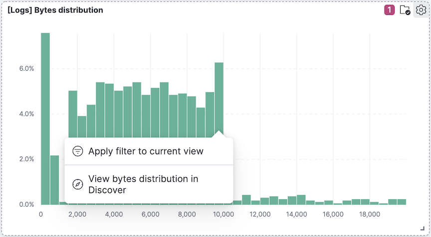

Customize interactions with drilldowns
editCustomize interactions with drilldowns
editPanels have built-in interactive capabilities that apply filters to the dashboard data. For example, when you drag a time range or click a pie slice, a filter for the time range or pie slice is applied. Drilldowns let you customize the interactive behavior while keeping the context of the interaction.
There are three types of drilldowns you can add to dashboards:
- Dashboard — Navigates you from one dashboard to another dashboard. For example, create a drilldown for a Lens panel that navigates you from a summary dashboard to a dashboard with a filter for a specific host name.
- URL — Navigates you from a dashboard to an external website. For example, a website with the specific host name as a parameter.
- Discover — Navigates you from a Lens dashboard panel to Discover. For example, create a drilldown for a Lens visualization that opens the visualization data in Discover for further exploration.
Third-party developers can create drilldowns. To learn how to code drilldowns, refer to this example plugin.
Create dashboard drilldowns
editDashboard drilldowns enable you to open a dashboard from another dashboard, taking the time range, filters, and other parameters with you so the context remains the same. Dashboard drilldowns help you to continue your analysis from a new perspective.
For example, if you have a dashboard that shows the logs and metrics for multiple data centers, you can create a drilldown that navigates from the dashboard that shows multiple data centers, to a dashboard that shows a single data center or server.

The panels you create using the following editors support dashboard drilldowns:
- Lens
- Maps
- TSVB
- Vega
- Aggregation-based area chart, data table, heat map, horitizontal bar chart, line chart, pie chart, tag cloud, and vertical bar chart
- Timelion
Create and set up the dashboards you want to connect
editUse the Sample web logs data to create a dashboard and add panels, then set a search and filter on the [Logs] Web Traffic dashboard.
- Add the Sample web logs data.
-
Create a new dashboard, click Add from Library, then add the following panels:
- [Logs] Response Codes Over Time + Annotations
- [Logs] Visits
- Set the time filter to Last 30 days.
-
Save the dashboard. In the Title field, enter
Detailed logs. -
Open the [Logs] Web Traffic dashboard, then set a search and filter.
Search:
extension.keyword: ("gz" or "css" or "deb")
Filter:geo.src: US
Create the dashboard drilldown
editCreate a drilldown that opens the Detailed logs dashboard from the [Logs] Web Traffic dashboard.
- Open the panel menu for the [Logs] Errors by host data table, then select Create drilldown.
-
Click Go to dashboard.
-
Give the drilldown a name. For example,
View details. - From the Choose a destination dashboard dropdown, select Detailed logs.
- To use the geo.src filter, KQL query, and time filter, select Use filters and query from origin dashboard and Use date range from origin dashboard.
- Click Create drilldown.
-
Give the drilldown a name. For example,
- Save the dashboard.
-
In the data table panel, hover over a value, click +, then select
View details.
Create URL drilldowns
editURL drilldowns enable you to navigate from a dashboard to external websites. Destination URLs can be dynamic, depending on the dashboard context or user interaction with a panel. To create URL drilldowns, you add variables to a URL template, which configures the behavior of the drilldown. All panels that you create with the visualization editors support dashboard drilldowns.

Some panels support multiple interactions, also known as triggers. The variables you use to create a URL template depends on the trigger you choose. URL drilldowns support these types of triggers:
- Single click — A single data point in the panel.
- Range selection — A range of values in a panel.
For example, Single click has {{event.value}} and Range selection has {{event.from}} and {{event.to}}.
Create a URL drilldown
editFor example, if you have a dashboard that shows data from a Github repository, you can create a URL drilldown that opens Github from the dashboard panel.
- Add the Sample web logs data.
- Open the [Logs] Web Traffic dashboard.
- In the toolbar, click Edit.
-
Create a donut chart
- Click Create visualization.
- From the Chart type dropdown, select Donut.
- From the Available fields list, drag machine.os.keyword to the workspace.
- Click Save and return.
- Open the donut chart panel menu, then select Create drilldown.
-
Click Go to URL.
-
Give the drilldown a name. For example,
Show on Github. - For the Trigger, select Single click.
-
To navigate to the Kibana repository Github issues, enter the following in the Enter URL field:
https://github.com/elastic/kibana/issues?q=is:issue+is:open+{{event.value}}Kibana substitutes
{{event.value}}with a value associated with the selected pie slice. - Click Create drilldown.
-
Give the drilldown a name. For example,
- Save the dashboard.
-
On the donut chart panel, click any chart slice, then select Show on Github.

-
In the list of Kibana repository issues, verify that the slice value appears.

Create Discover drilldowns
editDiscover drilldowns enable you to open Discover from a Lens dashboard panel, taking the time range, filters, and other parameters with you so the context remains the same.
For example, when you create a Discover drilldown for a pie chart, you can click a slice in the pie chart, and only the documents for the slice appear in Discover.

Discover drilldowns are supported only by Lens panels. To open all of the Lens dashboard panel data in Discover, check Open panel data in Discover.
Create the Discover drilldown
editCreate a drilldown that opens Discover from the Sample web logs data [Logs] Web Traffic dashboard.
- Click Edit, open the panel menu for the [Logs] Bytes distribution bar vertical stacked chart, then select Create drilldown.
- Click Open in Discover.
-
Give the drilldown a name. For example,
View bytes distribution in Discover. - To open the Discover drilldown in a new tab, select Open in new tab.
- Click Create drilldown.
- Save the dashboard.
-
On the [Logs] Bytes distribution bar vertical stacked chart, click a bar, then select View bytes distribution in Discover.

Manage drilldowns
editMake changes to your drilldowns, make a copy of your drilldowns for another panel, and delete drilldowns.
- Open the panel menu that includes the drilldown, then click Manage drilldowns.
-
On the Manage tab, use the following options:
- To change drilldowns, click Edit next to the drilldown you want to change, make your changes, then click Save.
- To make a copy, click Copy next to the drilldown you want to change, enter the drilldown name, then click Create drilldown.
- To delete a drilldown, select the drilldown you want to delete, then click Delete.
URL templating
editThis functionality is in beta and is subject to change. The design and code is less mature than official GA features and is being provided as-is with no warranties. Beta features are not subject to the support SLA of official GA features.
The URL template input uses Handlebars — a simple templating language. Handlebars templates look like regular text with embedded Handlebars expressions.
https://github.com/elastic/kibana/issues?q={{event.value}}
A Handlebars expression is a {{, some contents, followed by a }}. When the drilldown is executed, these expressions are replaced by values from the dashboard and interaction context.
In addition to built-in Handlebars helpers, you can use custom helpers.
Refer to Handlebars documentation to learn about advanced use cases.
| Custom helper | Use case |
|---|---|
json |
Serialize variables in JSON format. Example:
|
rison |
Serialize variables in rison format. Rison is a common format for Kibana apps for storing state in the URL. Example:
|
date |
Format dates. Supports relative dates expressions (for example, "now-15d"). Refer to the moment docs for different formatting options. Example:
|
formatNumber |
Format numbers. Numbers can be formatted to look like currency, percentages, times or numbers with decimal places, thousands, and abbreviations. Refer to the numeral.js for different formatting options. Example:
|
lowercase |
Converts a string to lower case. Example:
|
uppercase |
Converts a string to upper case. Example:
|
trim |
Removes leading and trailing spaces from a string. Example:
|
trimLeft |
Removes leading spaces from a string. Example:
|
trimRight |
Removes trailing spaces from a string. Example:
|
mid |
Extracts a substring from a string by start position and number of characters to extract. Example:
|
left |
Extracts a number of characters from a string (starting from left). Example:
|
right |
Extracts a number of characters from a string (starting from right). Example:
|
concat |
Concatenates two or more strings. Example:
|
replace |
Replaces all substrings within a string. Example:
|
split |
Splits a string using a provided splitter. Example:
|
encodeURIComponent |
Escapes string using built in |
encodeURIQuery |
Escapes string using built in |
URL template variables
editThe URL drilldown template has three sources for variables:
-
Global static variables that don’t change depending on the place where the URL drilldown is used or which user interaction executed the drilldown. For example:
{{kibanaUrl}}. -
Context variables that change depending on where the drilldown is created and used. These variables are extracted from a context of a panel on a dashboard. For example,
{{context.panel.filters}}gives access to filters that applied to the current panel. - Event variables that depend on the trigger context. These variables are dynamically extracted from the interaction context when the drilldown is executed.
To ensure that the configured URL drilldown works as expected with your data, you have to save the dashboard and test in the panel. You can access the full list of variables available for the current panel and selected trigger by clicking Add variable in the top-right corner of a URL template input.
Variables reference
edit| Source | Variable | Description |
|---|---|---|
Global |
kibanaUrl |
Kibana base URL. Useful for creating URL drilldowns that navigate within Kibana. |
Context |
context.panel |
Context provided by current dashboard panel. |
context.panel.id |
ID of a panel. |
|
context.panel.title |
Title of a panel. |
|
context.panel.filters |
List of Kibana filters applied to a panel. |
|
context.panel.query.query |
Current query string. |
|
context.panel.query.language |
Current query language. |
|
context.panel.timeRange.from |
Current time picker values. |
|
context.panel.indexPatternId |
The data view IDs used by a panel. |
|
context.panel.savedObjectId |
ID of saved object behind a panel. |
|
Single click |
event.value |
Value behind clicked data point. |
event.key |
Field name behind clicked data point |
|
event.negate |
Boolean, indicating whether clicked data point resulted in negative filter. |
|
event.points |
Some visualizations have clickable points that emit more than one data point. Use list of data points in case a single value is insufficient. Example:
Note:
|
|
Row click |
event.rowIndex |
Number, representing the row that was clicked, starting from 0. |
event.values |
An array of all cell values for the row on which the action will execute. To access a column value, use |
|
event.keys |
An array of field names for each column. |
|
event.columnNames |
An array of column names. |
|
Range selection |
event.from |
|
event.key |
Aggregation field behind the selected range, if available. |